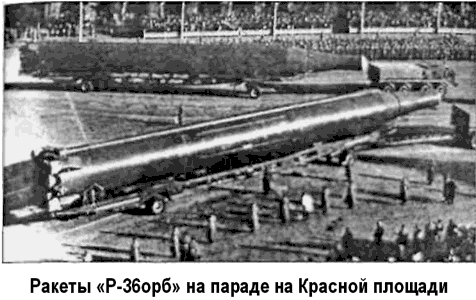
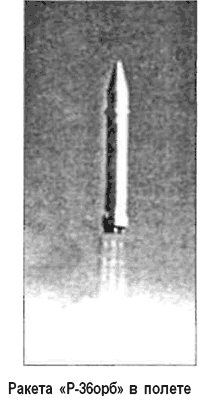

Проект «Р-36» (Системы частично-орбитальной бомбардировки)
17 сентября 1966 года с космодрома Байконур состоялся запуск, официального объявления о котором так и не появилось. Сеть зарубежных станций слежения зафиксировала более 100 обломков на орбите с наклонением 49,6 в диапазоне высот от 250 до 1300 километров. Распределение обломков позволяло предположить, что они представляют собой останки предпоследней ступени на низкой околоземной орбите, последней ступени на вытянутой эллиптической орбите и, может быть, отдельно полезной нагрузки, находящейся несколько выше. Подобный двойной или тройной взрыв не мог произойти самопроизвольно, но планировался ли он заранее или был произведен из-за неполадок, осталось неизвестным.
Аналогичный запуск состоялся 2 ноября 1966 года, также оставив на орбите более 50 прослеживаемых фрагментов, распределенных по высотам от 500 до 1500 километров и свидетельствующих о раздельном подрыве груза, последней и предпоследней ступеней ракеты.
Новая серия запусков началась в январе 1967 года. Стартующие с Байконура ракеты выходили на очень низкие орбиты с апогеем около 250 и перигеем от 140 до 150 километров.
Как обычно, они объявлялись очередными спутниками серии «Космос», но в стандартной формулировке отсутствовало указание периода обращения по орбите. Это сразу было воспринято как свидетельство возвращения груза с орбиты еще до завершения первого витка. Одни комментаторы сразу же связали запуски с испытаниями орбитального оружия, другие полагали, что таким образом проверялась работа систем посадки пилотируемых кораблей типа «Союз».
Во всех этих запусках трасса полета пересекала восточную часть Сибири, центральную часть Тихого океана, оконечность Южной Америки и Южную Атлантику и затем через Африку и Средиземноморье возвращалась на территорию СССР, давая возможность после первого витка приземлиться недалеко от места старта или в районе Капустина Яра.
Дискуссии между экспертами завершились 3 ноября 1967 года, когда министр обороны США Роберт Макнамара объявил, что эти запуски, по всей видимости, представляют собой испытания советской системы «частично-орбитальной бомбардировки» («Fractional Orbital Bombardment System», сокращенно — «FOBS»), предназначающейся для нанесения ракетного удара по США не по кратчайшей баллистической траектории через Северный полюс, а с наименее ожидаемого и наименее защищенного южного направления.
Заявление Макнамары было вызвано запусками 16 и 28 октября, состоявшимися уже после вступления в силу Договора о неразмещении оружия массового уничтожения в космосе. Но как бы удивительно это ни звучало, американский министр обороны подчеркивал, что эти советские испытания не нарушают существующих договоров и резолюций, «поскольку головные части SS-9 находятся на орбите менее одного оборота и на данном этапе отработки, по всей вероятности, не несут ядерных зарядов».
Через несколько дней наделавшие столько шума ракеты были продемонстрированы на московском параде по поводу 50-летия Октябрьской революции. Как и раньше, были показаны и «ГР-1», но на сей раз они уже не назывались «орбитальными». После них впервые на публике появились «Р-36орб», известные на Западе как «SS-9 Scarp»:
«…колоссальные ракеты, каждая из которых может доставить к цели ядерные заряды огромной мощности. Ни одна армия в мире не имеет таких зарядов. Эти ракеты могут быть использованы для межконтинентальных и орбитальных запусков».

«Р-36орб» («8К69») конструкции ОКБ-586 Михаила Янгеля создавалась на базе межконтинентальной баллистической ракеты «Р-36» («8К67»). Ракета двухступенчатая, диаметр первой и второй ступени — 3 метра, длина более 33 метров. Стартовая масса ракеты составляла более 180 тонн.
Первая ступень ракеты оснащена маршевым двигателем «РД-261», состоящим из трех двухкамерных модулей «РД-260». Вторая ступень оснащалась двухкамерным маршевым «РД-262». Двигатели разработаны в КБ Энергомаш под руководством Валентина Глушко. Топливом для обеих ступеней и орбитальной головной части был избран азотный тетроксид и гептил (несимметричный диметилгидразин).
В приборном отсеке ракеты была сосредоточена командная аппаратура системы управления новой конструкции, основным элементом которой являлась гиростабилизированная платформа, построенная на гироскопах повышенной точности. Ракета также оснащалась новой автономной системой управления.
В состав орбитальной головной части входили боевая часть с ядерным зарядом, тормозная жидкостная двигательная установка и приборный отсек с системой управления для ориентации и стабилизации головной части. Мощность орбитальной головной части достигала 20 мегатонн. Тормозной двигатель орбитальной головной части — однокамерный.
Он устанавливался в центральной части отсека управления внутри тороидального топливного модуля. Такая форма топливных емкостей позволила сделать компоновку отсека оптимальной и снизить массу его конструкции. Внутри топливных емкостей для надежности запуска и работы двигателя в состоянии невесомости устанавливались разделительные перегородки и сетки, обеспечивающие надежную бескавита ционную работу насосов двигателя.
Создание и отработка тороидального топливного модуля с установкой жидкостного двигателя во внутренней цилиндрической полости торового кольца баков стали крупным шагом вперед в советском ракетном двигателестроении.
Для проведения летно-конструкторских испытаний «Р-36орб» на правом фланге полигона Байконур был создан наземный испытательный комплекс, состоявший из технической позиции на площадке № 42, а также наземной и шахтных пусковых установок.
На площадке № 42 было построено защищенное сооружение № 40 арочного типа, где проводились сборка и горизонтальные испытания ракеты. В 1965 году на базе подготовленных шахт началось строительство «объекта 401» в составе трех пусковых установок и командного пункта.

Первый пуск «Р-36орб» был выполнен боевыми расчетами полигона 16 декабря 1965 года. Головная часть перелетела цель на Камчатке на 27 километров из-за ненормальной работы системы стабилизации по каналу рысканья. 5 февраля 1966 года стартовала вторая ракета. При втором пуске было отмечено большое отклонение головной части от цели по вине тормозной двигательной установки.
Третий пуск, назначенный на 18 марта 1966 года, не состоялся, так как во время заправки ракета загорелась. Причиной пожара стала преждевременная отстыковка наполнительных магистралей вследствие ошибки номера расчета.
Ракета сгорела, существенно повредив пусковой стол правого старта площадки № 67.
Для следующего пуска было проведено дооборудование левой пусковой установки площадки № 67, и 20 мая 1966 года стартовала очередная «Р-Зборб». Однако пуск вновь был неудачным — не произошло полного отделения головной части от отсека управления.
В 1967 году программа летно-конструкторских испытаний имела еще более интенсивный характер. Было осуществлено девять пусков. Они прошли успешно, но нарекания вызвала система наведения на цель, которая не позволяла добиться требуемой точности.
Тем не менее, после завершения испытаний, 19 ноября 1968 года система была принята на вооружение и введена в ограниченную эксплуатацию. В районе Байконура было дислоцировано 18 ракет «Р-36орб» шахтного базирования, оснащенных боеголовками системы частично-орбитального бомбометания.
В последующие годы запуски осуществлялись с частотой два раза в год и носили характер постоянного поддержания боеготовности системы. Они в целом прошли успешно, за исключением пуска 23 декабря 1969 года, в отношении которого не все ясно и поныне. Сама полезная нагрузка под названием «Космос-316» была выведена на околоземную орбиту, но с параметрами, не характерными для запусков по данной программе. Она не была подорвана, как во время пусков 1966 года, а сошла с орбиты под действием земной атмосферы. Часть обломков упала на территории США.
В 1971 году был осуществлен последний запуск по частично-орбитальной траектории. Дальнейшие запуски не проводились. Дело в том, что в 1972 году США ввели в эксплуатацию спутниковую систему раннего оповещения, фиксирующую ракеты не на подлете, а в момент пуска. Теперь, в случае запуска орбитальных ракет, США быстро получили бы информацию об их старте. Орбитальные ракеты утратили одно из своих главных преимуществ — возможность внезапной атаки.
Договор об ограничении стратегических вооружений (ОСВ-2), заключенный в 1979 году, запрещал орбитальные ракеты.
Кроме того, СССР и США договорились о том, что на испытательных полигонах не будут размещаться войсковые части с боевыми ракетами. Договором предусматривалась ликвидация двенадцати шахт орбитальных ракет и переоборудование шести шахт под испытания других комплексов. Договор не был ратифицирован Соединенными Штатами, но и Америка, и Советский Союз придерживались его положений.
С 1982 года началось поэтапное снятие с дежурства и уничтожение боевых ракетных комплексов «Р-36орб». В мае 1984 года все шахты были освобождены от ракет и подорваны.
Система частично-орбитальной бомбардировки прекратила свое существование.